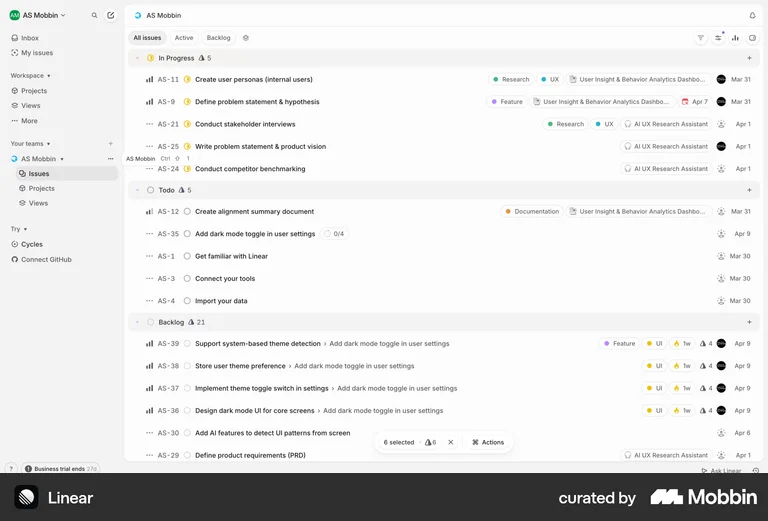
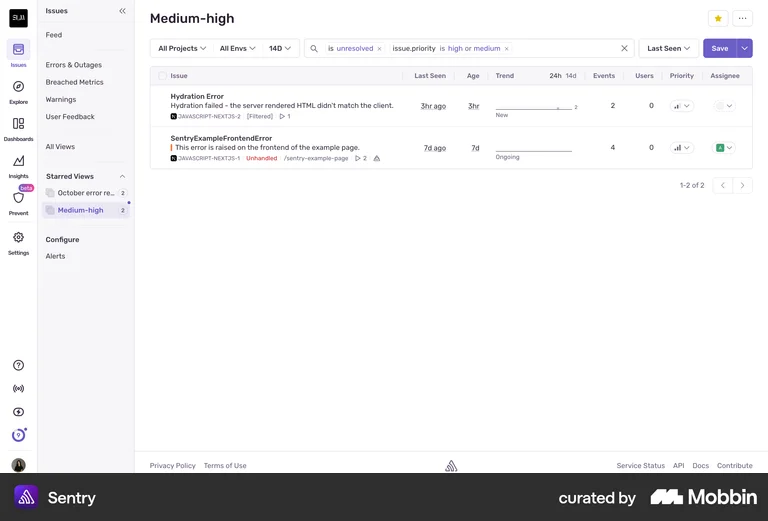
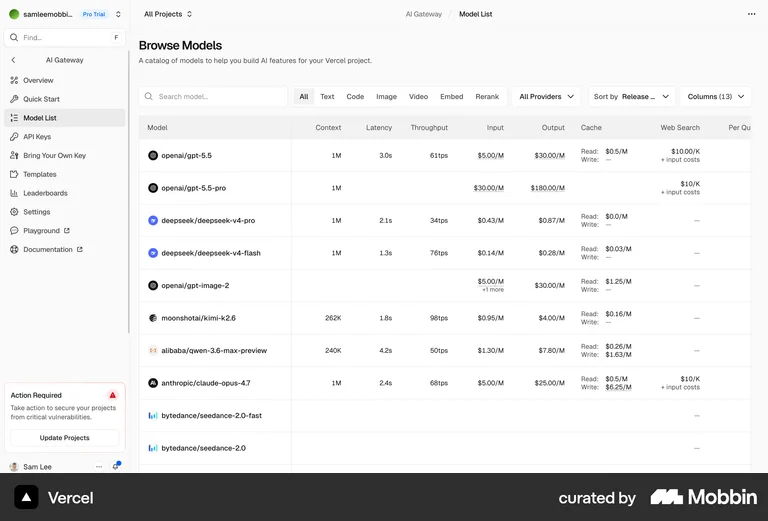
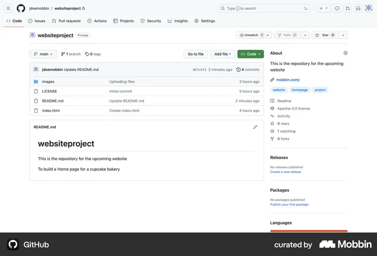
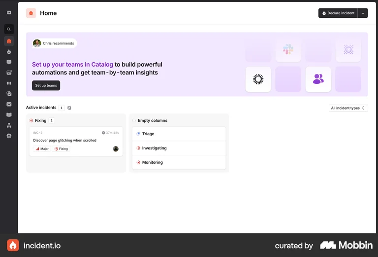
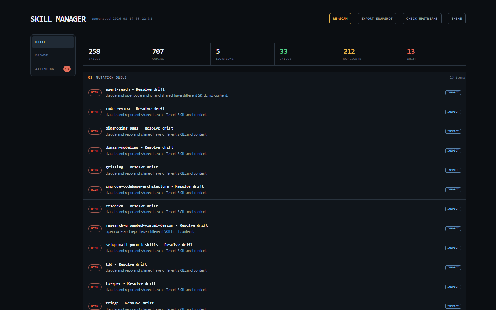

Throwaway · ticket 12 · not production
Dark Genome instrument. Near-black layered surfaces, one warm-gold accent used only on the next safe action and the active mode. Coral is reserved for broken copies. The memorable move is a reasoned queue: every attention row names why it is here and what the next honest action is. Not a marketplace, not a card grid, not a central-library browser.
#0b0e12bg#10151bbg-raised#131920surface#e8edf2ink#9ba7b5muted#e8b44aaccent / next action#e26d5adrift / break#4fcf8bverified / good#bdc9d5genome fill#78b5eeinfo / explainclaude, shared, and repo have different SKILL.md content. Preview the repo copy before any target is written.





